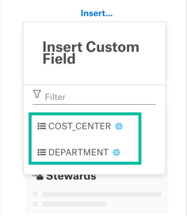
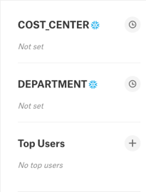
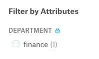

Snowflake Tags in Alation¶
Alation Cloud Service Applies to Alation Cloud Service instances of Alation
Customer Managed Applies to customer-managed instances of Alation
Available from version 2022.1
Overview¶
Snowflake tags facilitate data governance by enabling data stewards to track sensitive data. This has applications in compliance, discovery, protection, and resource usage. A Snowflake tag is a schema-level object that can be associated with another Snowflake object. A tag can be assigned an arbitrary string value upon associating the tag with a Snowflake object. For more information on Snowflake tags, refer to the Snowflake documentation.
Alation enables you to associate Snowflake tags with Snowflake objects from within Alation. You can also assign a tag value to that object. Alation will sync the value with Snowflake automatically.
Here’s a quick overview of how to start working with Snowflake tags in Alation:
In Snowflake, an admin must grant access to a specific database, schemas, and views. Alation requires these to access tag metadata. Tags and values must also be created in Snowflake.
In Alation, a Server Admin turns on the Enable Snowflake Tags feature. Then they run metadata extraction on the Snowflake data source. Alation maps each Snowflake tag to its own custom picker field in Alation.
A Catalog Admin or Server Admin adds the new custom fields to data object templates. You can assign Snowflake tags to a schema, table, or column template.
As needed, a Steward uses the custom fields to assign a tag value to specific Snowflake data objects.
Users can view the tag values on the relevant catalog pages. They must have access to the catalog pages and permissions to view the custom fields. Users can also use Snowflake tags as filters in advanced searches.
See detailed instructions for each of these steps below.
Configuring Snowflake¶
To access Snowflake tags, Alation requires access to specific schemas and views in Snowflake. The desired tags and tag values must also exist in Snowflake first. The configuration for tags depends on the type of connector you are using in Alation:
OCF Snowflake Connector¶
If your Snowflake data source is connected to the catalog using the Snowflake OCF Connector, ensure that the service account has access to the required views in the ACCOUNT_USAGE schema. See Policy and Tag Extraction for more details.
Native (Built-in) Snowflake Connector¶
If your Snowflake data source is connected to the catalog using the native (built-in) connector for Snowflake, you need to create a specific view for Alation to extract tags. This may require you to create a specific database and schema. If you are already extracting policies from Snowflake, the required database and schema will already exist. If so, you will only need to create and grant access to the required views. See Privileges for Policy Center and Tags for instructions on configuring the required views in Snowflake.
Creating Tags and Values in Snowflake¶
Tags and tag values must be created in Snowflake. Alation currently does not support creating new tags or values inside of Alation.
To make a tag available in Alation, create the tag in Snowflake. As long as the tag exists, it will be brought into Alation.
To make a tag value available in Alation, assign the desired value to an object in Snowflake. As long as the tag value is assigned to at least one object, it will be brought into Alation.
Do this work before running metadata extraction.
Enabling Snowflake Tags in Alation¶
To start working with Snowflake tags in Alation, a Server Admin needs to turn on the feature in your Alation settings.
Click the three gear icon in the top right corner. This opens the Admin Settings page.
Under the Server Admin section, click Feature Configuration.
Scroll down to Enable SnowFlake Tags and click the toggle button.
Scroll back to the top of the page and click the Save changes button.
In the dialog that appears, click Save Configuration.
Your page will refresh. Other logged-in users will see a message prompting them to refresh their browser page. This may cause users to lose work, so be careful when enabling this feature.
Bringing Snowflake Tags into Alation¶
After a Server Admin has taken the steps above, a Catalog Admin runs metadata extraction (MDE) on the Snowflake data source. This will bring Snowflake tags into the data catalog:
If your Snowflake data source is on the OCF Snowflake connector, see the :Configure Metadata Extraction topic in Snowflake OCF Connector. for the OCF connector.
If your Snowflake data source is on the native Snowflake connector, follow the instructions in the Metadata Extraction topic.
When metadata extraction finishes, Snowflake tags will become available as custom fields. Go to Admin Settings > Customize Catalog > Custom Fields and look under the Pickers section. Custom fields that come from Snowflake tags will display a snowflake icon next to their name.
Note
If you ever make changes to tags in Snowflake, you need to run metadata extraction again to get the changes into Alation. It can take up to two hours for changes to take place in Snowflake due to data latency. You may need to wait some time before running metadata extraction. Refer to Data Latency in Snowflake documentation for more details.
Adding Snowflake Tags to Templates¶
After bringing Snowflake tags into Alation as described above, a Catalog Admin or Server Admin can add the tags to data catalog pages. The admin does this by adding the relevant custom fields to templates. This is the same as adding any other custom field, with two differences:
You can only add Snowflake tags to the Schema, Table, and Column templates.
Custom fields that are tied to Snowflake tags will display a snowflake icon next to their name.

For additional help, see:
Applying Custom Fields to Templates for adding custom fields to templates.
Editing the Layout of Object Templates for customizing the layout of a template.
After you’ve added a tag to a template, you can see it by visiting a catalog page for that object type in a Snowflake data source. If tag values were already assigned to objects in Snowflake before metadata extraction, the values will be displayed in the Catalog.
Note
Snowflake tags will not appear on catalog pages in non-Snowflake data sources.
Note
Associating a tag’s custom field with a template makes that tag available to that type of object. To associate the tag with a specific object, you must assign a value to the tag on the object’s catalog page.
Setting and Removing a Tag Value on a Data Object¶
After you’ve added a tag to a template, a Steward can set the tag value on a catalog page. Alation will sync the tag value with Snowflake. The catalog page must be in a Snowflake data source and use the relevant template. You must be a Steward to edit the value in Alation. You must also have Snowflake credentials to sync the value with Snowflake.
Navigate to the catalog page for a Snowflake data object. The object’s template must have a Snowflake tag added to it.
Locate the Snowflake tag on the page. It will appear as a custom field with a Snowflake icon next to its title.
The exact location of the tag depends on where the custom field is positioned in the data object’s template.
Note
Snowflake tags will not appear on catalog pages in non-Snowflake data sources.
Click on the tag’s current value to see a picker list of possible values. Then select the value you want to apply to this data object.
To remove a tag’s value, choose Not set. The object will no longer be associated with the tag in Snowflake.
Note
The list of available values comes from Snowflake. If you want to add a new value, that value must be associated with an object in Snowflake first. Then you must run metadata extraction to bring the new tag value into Alation.
A connection dialog will appear. Choose a connection and user, then click the Test and Continue button.
You’ll see a Request Sent dialog. Click Close.
Alation will send the tag value you chose to your Snowflake data source. You’ll get an email informing you when the change has taken place in Snowflake. This may take up to two hours.
Searching with Tags¶
Snowflake tags will appear as filter attributes when using Alation’s advanced search. You can filter your search results based on Snowflake tag values. Snowflake tags will appear with a snowflake icon next to their name in the list of filters.
